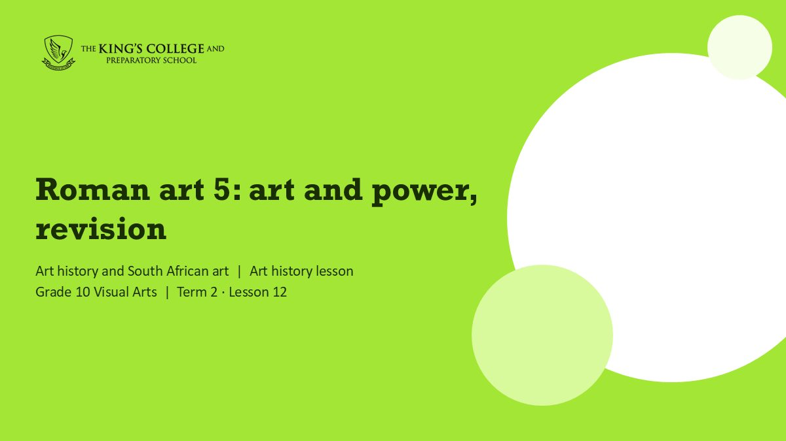

Term 2 · Lesson 12 · Art history lesson
Roman art 5: art and power, revision
Start here
Today I will
- Link Roman works to the Focus Theme of art and power
- Plan and write an essay-style answer with evidence
- Peer-mark an answer using a rubric
If a Roman emperor had social media, which of his buildings or statues would he post first, and what caption would he write?
Words to know
- Focus Theme
- A big idea in the IEB Visual Arts SAG, such as art and power, used to link artworks across eras.
- Art and power
- How rulers and institutions use art to show and keep their authority.
- Essay
- A structured piece of writing with an introduction, paragraphs of argument with evidence, and a conclusion.
- Evidence
- Specific facts from the artwork (what you can see) and its context that support your point.
- Command word
- The instruction word in a question, such as discuss, compare or explain, that tells you what to do.
Slides

Videos
Notes
Linking Roman art to the Focus Theme of art and power; revision for the cycle test.
Roman art and power: the big picture
- Engineering as power: Arches, vaults, domes and concrete showed what Rome could do that no one else could.
- Buildings for the people: The Colosseum, baths and aqueducts kept citizens loyal by showing the emperor's generosity.
- The ruler's image: Augustus of Prima Porta: idealised, symbolic, repeated across the empire on statues and coins.
- Stories of victory: Triumphal arches and Trajan's Column told victories from the winners' point of view.
- Still used today: The Union Buildings and public statues in South Africa borrow the Roman language of authority.
Writing a strong essay answer
- Unpack the question: Circle the command word and the topic; count the marks to decide how many points to make.
- Introduction: One or two sentences: define the key term and say what you will argue.
- Point, evidence, effect: Each paragraph makes one point, gives visual evidence from a named work and explains the effect.
- Use the terms: Use correct art terms: verism, idealisation, oculus, continuous narrative, propaganda.
- Conclusion: Answer the question directly in a final sentence; do not add new points.
Every stone and statue in Rome had a message: the empire is strong, and the emperor provides.
Jesus said that rulers of the nations lord it over people, but whoever wants to be great must be a servant. How does this idea of leadership compare with the image of power in Roman art?
Practical
You need: History booklet, VJ, peer-marking rubric
Essay: Roman propaganda
- Question: 'Discuss how Roman art and architecture were used as propaganda. Refer to two works.' (10)
- Plan for two minutes: list two works, three strategies and the evidence for each.
- Write an introduction, three paragraphs (point, evidence, effect) and a conclusion.
- One paragraph must analyse one artwork in depth with the FET formula: identify, describe, effect.
- Swap with a partner and peer-mark with the rubric. Write one strength and one improvement.
- Read the comment on your own essay and correct one paragraph.
Activities 3 and 4 hand-in.
Test yourself
- Explain what the Focus Theme 'art and power' means.
- Identify one Roman work and two propaganda strategies it uses.
- Compare Roman propaganda with one present-day South African example in one or two sentences.
Show answers
1. How rulers and institutions use art to show, justify and keep authority. 2. For example, the Colosseum: scale and setting (a huge public building that showed the emperor's generosity). 3. For example, the Union Buildings use Classical columns and a commanding setting on a hill, as Roman buildings did, to suggest stable authority.
Finished early?
Practise the paragraph structure that wins essay marks.
- Choose one Roman work you know well.
- Write one point about how it shows power.
- Add evidence: something specific you can see in the work.
- Finish with the effect on the viewer, and underline the art term you used.